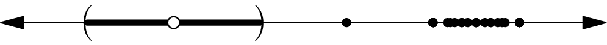
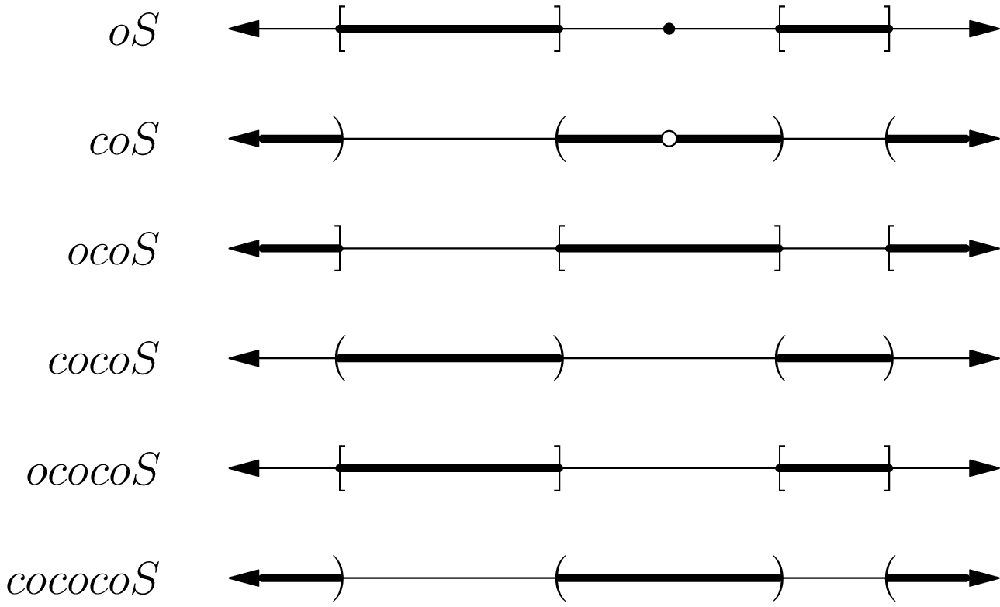
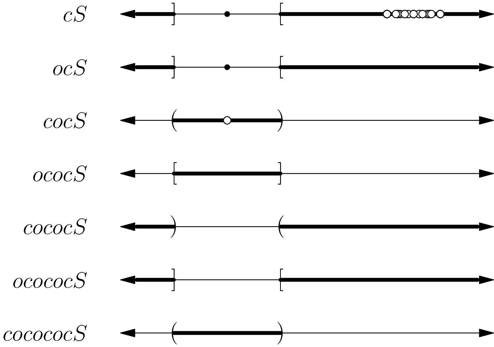

April 30th
Today I learned the Kuratowski closure-complement theorem, from here . Here is the statement.
Theorem. Suppose $X$ is a topological space, and fix $S\subseteq X.$ The set of sets that can be produced by taking successive complements or closures of $S$ has size at most $14.$
For brevity, we let $o$ denote the closure (for "overline'') and $c$ denote the complement (as in "complement''). We note that $c^2=\op{id}$ ("taking the complement of the complement does nothing''), and we state but do not prove that $o^2=o$ ("the closure of a set is closed''); in fact, the second follows quickly from the definition\[oS=\bigcap_{\substack{C\supseteq S\\C\text{ closed}}}C.\]Anyways, the point is that we only have to consider alternating sequences of $c$s and $o$s because having two consecutive $c$s or $o$s could be compressed into a smaller sequence.
Here's the main lemma.
Lemma. For any $S\subseteq X,$ the sets $ocoS$ and $ocococoS$ are the same.
We remark that $S\mapsto cocS$ gives the interior of $S$: indeed, it suffices to show that the closure of the complement of $S$ is the complement of the interior of $S,$ which is the statement that\[\bigcap_{\substack{C\supseteq X\setminus S\\\text{C closed}}}C\stackrel?=X\setminus\bigcup_{\substack{U\subseteq S\\U\text{ open}}}U\]after expanding out the definitions. Distributing the $X\setminus$ over the right-hand side means that we are taking the arbitrary intersection of $X\setminus U$s, but these parameterize the closed sets containing $X\setminus S,$ which is the left-hand side.
Anyways, the point is that $coc(ocoS)$ is the interior of (and therefore contained in) $ocoS.$ Thus,\[ocoS=o(ocoS)\supseteq o(coc(ocoS))=ocococoS.\]To get the other direction, we need $ocoS\subseteq ocococoS.$ Hoping that we live in a good world, it suffices to show that $coS\subseteq cococoS$ (closure preserves inclusion) which is equivalent to $oS\supseteq ococoS$ (complement reverses inclusion). But certainly $coc(oS)\subseteq oS$ (it's the interior), so we are done. $\blacksquare$
It remains to enumerate the possible alternating strings of $o$s and $c$s. Starting with $o,$ we can have\[oS,\,coS,\,ocoS,\,cocoS,\,ococoS,\,cococoS,\]but going any further would add redundancies by lemma. So we have $6$ elements in this case. Alternatively, we may start with $c$ to get\[cS,\,ocS,\,cocS,\,ococS,\,cococS,\,ocococS,\,cococoS,\]but going any further would add redundancies by lemma (using $cS$ for $S$). This gives $7$ elements in this case. Combining cases with the original set $S,$ we do indeed have at most $6+7+1=\boxed{14}$ sets. $\blacksquare$
I am obligated to say that $14$ is in fact an achievable maximum, even for well-behaved topological spaces like $\RR.$ The main idea in the construction is to throw a bunch of parts that behave differently with respect to closures and interiors. One example is\[S=(0,1)\cup(1,2)\cup\{3\}\cup([4,5]\cap\QQ).\]This looks like the following.

Here are the six sets starting from the closure.

Of particular note here is that $oS$ and $coc(oS)$ are different because of the isolated point. Otherwise we are mostly just chugging through the transformations. Anyways, we can indeed check that if we tried to take another complement, we would only get $ocoS.$
And here are the seven sets starting from the complement.

Of note here is that the interior $cocS$ is effectively erasing all the $[4,5]\cap\QQ$ stuff to give us new sets. Also, we do note that we're doing $(0,1)\cup(1,2)$ to give us an isolated point in the complement, which we use for fun and profit. Anyways, we can check that adding another closure gets back $ococS,$ as we expected from the proof. So we do total to $14$ sets, after checking everything is distinct.